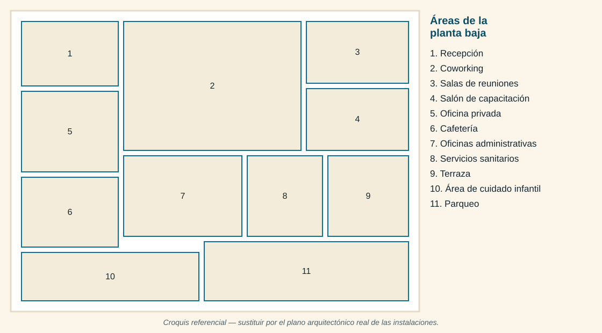

Donde tu éxito y tu bienestar se encuentran.
COINCIDE es un centro integral de coworking, capacitación y convergencia profesional: el ecosistema donde el talento, los recursos y las oportunidades se encuentran para generar sinergia.
"Trabajo, Café & Crianza"
Todo el proyecto, en un solo lugar
I. Información general
II. Proceso administrativo
III. Aspectos financieros y cierre
El proyecto en contexto
El presente informe desarrolla la propuesta de creación de una empresa como parte del curso Fundamentos de Administración de la Licenciatura en Psicología del Centro Universitario Sacatepéquez. El proyecto consiste en aplicar de forma práctica las fases del proceso administrativo a una idea de negocio concreta, viable y contextualizada en la realidad. La empresa propuesta se denomina COINCIDE y se define como un centro integral de coworking, capacitación y convergencia profesional. Su propósito, del cual se deriva su nombre, es ser el ecosistema extracto donde el talento, los recursos y las oportunidades se encuentran para generar sinergia.
Su actividad principal es el arrendamiento y la gestión de espacios de trabajo, reunión y eventos; alrededor de esta actividad central se articulará de servicios complementarios (cafetería, cuidado infantil por hora, equipo audiovisual y programas de networking) que constituyen negocios dependientes, sino elementos que agregan valor a la experiencia del cliente, facilitan la colaboración y aumentan el tiempo de permanencia dentro de las instalaciones. A lo largo del documento se detalla la justificación de la idea, la identidad corporativa, la estructura organizacional propuesta, los mecanismos de dirección y control del talento humano y la estimación del capital requerido para iniciar operaciones.
Como estudiantes que avanzan por el tercer año de la carrera, el equipo incorpora además una mirada particular y más técnica sobre el factor humano: la motivación, el clima laboral y la evaluación del empeño se abordan con criterios analíticos rigurosos y propios de la psicología organizacional.
Un vacío real en el mercado local
La elección de este tipo de negocio responde a cuatro razones fundamentales, sustentadas en la observación del mercado local y en las tendencias actuales de organización del trabajo, las cuales evidencian la necesidad de crear un espacio donde el desarrollo profesional y las oportunidades coinciden:
Transformación del modelo de trabajo
El trabajo remoto, híbrido e independiente dejó de ser una situación excepcional para convertirse en una modalidad permanente. Un número creciente de profesionales trabajan desde su casa o espacios improvisados que provocan aislamiento y no ofrecen las condiciones mínimas de concentración, conectividad estable ni una imagen corporativa. COINCIDE surge como la solución para que el bienestar laboral y la alta productividad converjan en un solo lugar.
Vacío en la oferta local
En Antigua Guatemala y sus municipios aledaños existe una alta concentración de emprendedores, freelancers, consultores y pequeñas empresas, pero la infraestructura disponible se limita a cafeterías (pensadas para el consumo, no para el trabajo) o alquiler de oficinas completas, cuyo costo y compromiso contractual resultan inalcanzables para quien inicia. Existe un espacio intermedio desatendido. Nuestro modelo se posiciona exactamente en ese punto de encuentro, haciendo coincidir tarifas accesibles y flexibilidad con instalaciones de primer nivel.
Demanda constante de espacios para capacitación
Empresas, instituciones, capacitadores independientes y organizaciones necesitan permanentemente salones equipados para cursos, talleres, diplomados y reuniones. Al evitar los altos costos de los hoteles (que incluyen servicios innecesarios) o la falta de equipo en otros locales, ofrecemos el entorno ideal, donde la transformación de conocimiento y al tecnológico adecuada coincide a la perfección.
Diversificación del riesgo y sinergia de servicios
El modelo no depende de una sola fuente de ingresos. Las membresías de coworking, el alquiler de salas, los eventos corporativos y los servicios complementarios (como la cafetería) generan distintas líneas de rentabilidad que coinciden y se retroalimentan entre sí. Esta combinación crea un ecosistema de consumo interno y reduce la vulnerabilidad ante la caída de una línea específica.
Desde el punto de vista de la viabilidad, la inversión inicial es moderada porque el inmueble se arrienda en lugar de adquirirse, y buena parte de los servicios especializados se contrata mediante multiservicios, lo que evita mantener una plantilla amplia desde el primer mes. Adicionalmente, la ubicación en Sacatepéquez ofrece una ventaja competitiva clave: es el escenario perfecto para hacer coincidir un mercado con alta demanda real y una competencia directa casi nula en este formato, diferenciándose claramente de la Ciudad de Guatemala, donde el modelo ya se encuentra saturado.
De una fragmentación cotidiana nace COINCIDE
"¿Por qué el trabajo, el aprendizaje y el bienestar personal tiene que transcurrir por caminos separados?"
La empresa nace desde una observación cotidiana, realizada por un grupo de estudiantes que identificó las mismas escenas de fragmentación se repetían una y otra vez: reuniones de negocios sostenidas en cafeterías con ruido de fondo, capacitadores cargando proyectores de un lugar a otro, emprendedores que atendían a sus clientes en la sala de su casa y profesionales que debían elegir entre asistir a una capacitación o quedarse a cuidar a sus hijos. De esa observación surgió una pregunta fundamental: ¿por qué el trabajo, el aprendizaje y el bienestar personal tiene que transcurrir por caminos separados? La respuesta dio origen a la idea de un ecosistema único donde todas estas facetas pudieron converger. Un lugar donde una persona pueda trabajar inventada por la mañana, dejar a su hijo en un área infantil segura, reunirse con un cliente en una sala equipada al mediodía, tomar un café sin salir del edificio, asistir a una capacitación por la tarde.
La empresa se constituye como una sociedad conformada por socios locales que aportan capital, experiencia en administración y un profundo conocimiento humano dentro de las organizaciones. Su visión de largo plazo no es únicamente arrendar metros cuadrados, sino consolidar una verdadera comunidad empresarial; un punto de encuentro donde las personas no solo hallen un escritorio, sino también aliados, clientes y conocimiento. El nombre COINCIDE expresa precisamente esta máxima aspiración, ser el lugar exacto en el tiempo y el espacio donde las ideas, el talento, los negocios y las oportunidades se encuentran para crecer juntos.
Hacia dónde vamos
Objetivos generales
- Crear y poner en funcionamiento un centro integral de coworking, capacitación y convergencia profesional en Antigua Guatemala, que ofrezca espacios profesionales, accesibles y seguros para el trabajo, el aprendizaje y la realización de reuniones y eventos, aplicando los principios del proceso administrativo.
- Consolidar una comunidad empresarial en Sacatepéquez que faciliten el encuentro y la sinergia entre emprendedores, capacitadores, profesionales independientes, pequeñas y medianas empresas, convirtiendo a la organización en un referente regional de desarrollo profesional.
Objetivos específicos
- Habilitar y equipar, durante el primer año de operación, una infraestructura funcional que incluya áreas de coworking, salas de reuniones, salones de capacitación, estación de café y área infantil, cumpliendo con las normas de seguridad y accesibilidad aplicable.
- Alcanzar una ocupación promedio del 65% de los espacios disponibles y una base de 60 membresías activas al finalizar el primer año de operación.
- Establecer alianzas con al menos quince capacitadores, consultores o instituciones formativas durante el primer año, con el fin de sostener una programación permanente de cursos, talleres y espacios de encuentro y networking.
- Diseñar e implementar un sistema de gestión del talento humano orientado a la motivación, la compensación justa y evaluación objetiva del desempeño, que permita mantener una rotación de personal menor al 15% anual.
Nombre de la empresa
El origen del nombre COINCIDE surge de una profunda reflexión sobre las necesidades del profesional moderno, fusionando su significado etimológico con un propósito organización. Proveniente del latín coincidere (encontrarse en un mismo punto), el nombre representa la intersección exacta depende convergen las distintas trayectorias de un usuario. Funcional como una respuesta directa a la fragmentación actual de los roles adultos, proponiendo un ecosistema físico donde el trabajo enfocado, la crianza, la socialización y las oportunidades de negocio logran sincronizarse de manera armónica, permitiendo al individuo desarrollarse integralmente sin tener que separarse ni sacrificar ninguna faceta de su vida.
Idea del negocio
COINCIDE es una empresa de servicios que arrienda y administra espacios profesionales de trabajo, reunión, capacitación y eventos. Estos espacios operan bajo un modelo de convergencia, integrando servicios complementarios como cafetería, cuidado infantil por horas, equipo audiovisual y programas permanentes de networking; dirigidos a emprendedores, freelancers, profesionales independientes, capacitadores, pequeñas y medianas empresas del departamento de Sacatepéquez.
Slogan
"COINCIDE: Donde tu éxito y tu bienestar se encuentran."
Justificación del logotipo
El logotipo de COINCIDE visualiza la integración armónica de la vida profesional y personal en un mismo ecosistema. Su diseño se fundamenta en tres pilares:
Composición visual
Un trazo continuo en forma de "C" (que evoca el yin y el yang) abraza y unifica tres elementos centrales: las siluetas adultas (enfoque profesional), la figura infantil (crianza y familia) y la taza de café (socialización y networking), demostrando que estas facetas pueden converger exitosamente.
Paleta de colores
La paleta busca una respuesta emocional equilibrada. El azul transmite la confianza y la formalidad del entorno corporativo; el naranja aporta la calidez y energía de la comunidad; y el verde azulado evoca la calma y la salud mental que da el balance entre el trabajo y la vida personal.
Tipografía
El uso de una fuente gruesa y en mayúsculas refleja modernidad y solidez institucional. Además, el descriptivo "Trabajo, Café & Crianza" comunica de manera directa y transparente la oferta del valor del negocio.
Perfil institucional
La clasificación de la empresa COINCIDE se define a través de cinco criterios fundamentales. En primer lugar, según su actividad económica, se cataloga como una organización del sector terciario o de servicios, ya que su modelo de negocios no se basa en la transformación de materias primas, sino en la comercialización del uso de espacios, infraestructura y servicios profesionales. Por su origen de capital, se define como una empresa privada, debido a que los fondos de inversión son aportados en su totalidad por socios particulares, sin ningún tipo de participación estatal.
En cuanto a su forma jurídica, la empresa se constituye como una Sociedad Anónima (S.A.), operando en estricto apego a las disposiciones del Código en Comercio de Guatemala y contando con sus respectivas inscripciones legales tanto en el Registro Mercantil como en la Superintendencia de Administración Tributaria (SAT). Adicionalmente, por su ámbito geográfico, se establece como una empresa local con una fuerte proyección regional dentro del departamento de Sacatepéquez, manteniendo abierta la posibilidad de expansión a través de nuevas sedes en el futuro. Finalmente, según su finalidad, opera como una empresa con fines de lucro, pero que mantiene una clara vocación de generar un impacto positivo y dinamizar el desarrollo económico de la comunidad local.
Una pequeña empresa con proyección de crecimiento
De acuerdo con los criterios establecidos en Guatemala para la clasificación empresarial, COINCIDE se clasifica inicialmente como una pequeña empresa. Esta categorización se sustenta en sus proyecciones operativas para el primer año, donde el personal en la plantilla constará de 8 colaboradores directos, modelo que será respaldado por un equipo de personal externo equivalente a 8 emprendedores o proveedores especializados contratados bajo la modalidad de multiservicios.
Físicamente, la empresa operará en un área de instalaciones que abarca aproximadamente 400 metros cuadrados, distribuidos estratégicamente de manera integral. Esta extensión permite albergar una capacidad instalada de 40 estaciones de trabajo individuales, 2 salas de reuniones, 2 salones de capacitación con capacidad para albergar hasta 60 personas de forma simultánea, además de integrar la estación de café y el área infantil. En conjunto, estos indicadores operativos y de infraestructura confirman su clasificación resultante como pequeña empresa en su fase de lanzamiento, con una proyección estratégica orientada a escalar y alcanzar el nivel de mediana empresa a partir de su tercer año de funcionamiento.
Antigua Guatemala, Sacatepéquez
La sede de COINCIDE se ubicará en Antigua Guatemala, departamento de Sacatepéquez, en un inmueble arrendado situado sobre una vía de acceso principal. Se ha determinado que el local de debe estar fuera del área de mayor congestión del casco histórico, pero dentro del radio urbano, con el fin de facilitar el estacionamiento y el ingreso ágil de los usuarios.

Criterios que sustentan la decisión de la ubicación
Concentración de la población objetivo
Alta densidad de emprendedores, profesionales del sector turístico, consultores independientes y pequeñas empresas en la región.
Accesibilidad
Cercanía a las rutas de ingreso principal y conexión directa con Ciudad Vieja, San Lucas Sacatepéquez, Jocotenango y Santa Lucía Milpas Altas.
Disponibilidad de estacionamiento
Espacio propio o viabilidad para establecer un convenio con un parqueo cercano, siendo este un requisito indispensable para la logística de eventos, talleres de capacitación y usuarios diarios.
Costo-beneficio del arrendamiento
Un valor de renta en la relación con el amplio metraje requerido (para albergar las áreas de coworking, oficinas privadas, salones y el área de cuidado infantil), resultando más competitivo al compararlo con las zonas corporativas de la capital.
Cumplimiento normativo
Elección de un inmueble que permite realizar las adecuaciones físicas necesarias, operando en estricto apego a las disposiciones del Consejo Nacional para la Protección de La Antigua Guatemala (CNPAG), así como las normas municipales y de seguridad vigentes.
Cinco líneas principales y dos servicios complementarios

1. Coworking y espacios de trabajo
Dirigido a emprendedores sin oficinas, freelancers, personas que trabajan desde casa, consultores, profesionales independientes y pequeñas empresas. Incluye escritorios compartidos por día o por mes, escritorios fijos asignados, oficinas privadas para dos o cuatro personas, internet de alta velocidad, servicios de impresión y escaneo, lockers, recepción de correspondencia y uso de áreas comunes.

2. Salas de reuniones
Salas equipadas con mesa de trabajo, pantalla o proyector, pizarrón y conectividad, disponibles por hora o por bloque de horas, tanto para miembros como para usuarios externos.

3. Centro de capacitadores
Salones acondicionados para cursos, talleres, seminarios, diplomados y conferencias. La empresa aporta el espacio, el mobiliario, el equipo audiovisual, la golosina, el registro de participantes, el coffee break y la difusión de la actividad; el capacitor aporta el contenido. Se contemplan tres modalidades comerciales: alquiler simple del salón, comisión sobre el valor de las inscripciones y paquete integral que incluye difusión, inscripción de participantes y alimentación.

4. Eventos corporativos
Alquiler de espacios para reuniones empresariales, lanzamientos de producto, conferencias, actividades de integración, celebraciones corporativas, presentaciones y ferias, con paquetes que integran salón, mobiliario, equipo audiovisual, coffee break, catering y personal de apoyo.

5. Programa de conexión y networking
Programación permanente de actividades: desayunos empresariales, ferias de emprendimiento, presentaciones de proyectos, charlas con emprendedores, mesas de trabajo sectoriales y club de miembros. Estas actividades constituyen el principal factor de diferenciación de la empresa, pues transforma el arrendamiento de espacios en la construcción de una comunidad.
6. Servicios complementarios

Estación de café
Ofrece café, té, bebidas frías, repostería, snacks y opciones rápidas, en formato de autoservicio durante las horas de menor afluencia y con barristas en las horas de mayor demanda. Se integra a los paquetes de evento y capacitaciones mediante coffee breaks.

Área infantil por horas
Espacio seguro y supervisado para los hijos de los usuarios, con cuidado por horas, áreas de juegos y actividades educativas y recreativas. Opera mediante alianza con una empresa especializada en cuidado infantil, bajo requisitos, controles y supervisión contractual definidos por la organización, con el fin de reducir el riesgo operativo y la carga administrativa.
Misión, visión y valores
Misión
"Brindar espacios profesionales, accesibles y seguros que permitan a emprendedores, profesionales independientes y empresas de Sacatepéquez trabajar, capacitarse, reunirse y conectarse en un mismo lugar, mediante infraestructura de calidad, servicios complementarios y un acompañamiento cercano que impulse su crecimiento."
Visión
"Ser para el año 2031 el principal centro de coworking, capacitación y conexión empresarial de la región central de Guatemala, reconocido por la calidad de sus espacios, por la solidez de su comunidad de miembros y por su contribución al desarrollo profesional y económico de Sacatepéquez."
Valores
Conexión
Cada acción de la empresa busca vincular personas, conocimiento y oportunidades. El colaborador no solo atiende a un cliente, sino que también lo presenta, lo integra y lo conecta con la comunidad.
Respeto
Trato digno y equitativo hacia clientes, colaboradores y proveedores, sin distinción de origen, género, edad, condición económica o tipo de emprendimiento.
Responsabilidad
Cumplimiento riguroso de los compromisos adquiridos: horarios, reservaciones, condiciones de los espacios, resguardo de la información y seguridad de los usuarios.
Excelencia en el servicio
Cuidado permanente de los detalles que conforman la experiencia: limpieza, puntualidad, funcionamiento del equipo, calidad del café y amabilidad en la atención.
Confidencialidad
Protección de la información, las conversaciones y los proyectos que los usuarios desarrollan dentro de las instalaciones.
Innovación
Disposición permanente a revisar, mejorar y adaptar los servicios conforme evolucionan las necesidades de los usuarios.
Objetivo general
Consolidar durante los primeros tres años de operación un modelo de negocio rentable y sostenible, que combine ingresos recurrentes provenientes de membresías con ingresos variables generados por eventos y capacitaciones, manteniendo altos niveles de satisfacción del cliente.
Objetivos específicos
- Alcanzar el punto de equilibrio operativo antes de finalizar el mes catorce de operación, mediante una ocupación mínima del 0% de la capacidad instalada.
- Realizar al menos ocho actividades mensuales entre capacitaciones, eventos corporativos y encuentros de networking a partir del segundo semestre de operación, sosteniendo una calificación promedio de satisfacción no menor a 4.5 sobre 5.
Políticas institucionales
- Reservación y uso de espacios: toda utilización de salones o áreas de eventos requiere reservación previa registrada en el sistema. Las cancelaciones deben notificarse con un mínimo de 24 horas de anticipación; de lo contrario se cobrará el 50% del valor reservado.
- Atención al cliente: todo requerimiento, solicitud o queja debe ser atendido en un plazo máximo de 24 horas hábiles y registro en la bitácora de servicio para su seguimiento.
- Confidencialidad: el personal está obligado a resguardar la información de los usuarios y no podrá divulgar datos, documentos ni contenidos observados dentro de las instalaciones. Esta obligación se formaliza mediante cláusulas contractuales.
- Convivencia y uso de áreas comunes: las áreas de trabajo compartido se mantienen en silencio moderado; las llamadas y video-llamadas se realizan en las cabinas o salas designadas. El uso de las instalaciones es personal e intransferible.
- Seguridad y áreas infantiles: el ingreso al edificio se controla mediante registro. Ningún menor podrá permanecer en las instalaciones sin la supervisión del personal del área infantil ni por un tiempo mayor al establecido en el contrato de servicio.
- Horario y puntualidad del personal: el personal debe presentarse quince minutos antes del inicio de su jornada para verificar la disponibilidad y las condiciones de los espacios asignados.
- Contrataciones de proveedores externos: todo proveedor de multiservicios debe encontrarse legalmente construido, contar como póliza de responsabilidad civil vigente y someterse a una evaluación trimestral de desempeño.
- Manejo de alimentos: la estación de café operará conforme a las normas sanitarias vigentes. Los proveedores de catering deberán presentar licencia sanitaria y tarjeta de salud del personal asignado.
Cómo nos estructuramos
Estructura organizacional
La organización aplica una especialización moderada. Los puestos de mando medio están claramente diferenciados por función (Administrativa-Financiera, Operaciones, y Comercial y Mantenimiento), de modo que cada coordinador domina un campo específico. En los niveles operativos se aplica una polivalencia controlada: el "Anfitrión de Recepción y de Coffee Station" está capacitado para unificar la atención al cliente, el registro de usuarios y el manejo de cafetería. Esta decisión responde al tamaño de la empresa, evitando tiempos ociosos y optimizando los costos de la planilla.
Departamentalización
Se adopta una departamentalización de tipo funcional, agrupando las actividades según la naturaleza del trabajo: área Administrativa, Contable y de RR.HH.; área de Operaciones; y área Comercial y de Mantenimiento. Esta estructura resulta apropiada para una pequeña empresa porque evita la duplicidad de funciones, define claramente las áreas encargadas de la rentabilidad y facilita el control gerencial.
Cadena de mando
La autoridad desciende de manera clara desde la Gerencia General hacia las tres coordinaciones, y de cada coordinación hacia su respectivo personal operativo (Auxiliar, Anfitriones y Ejecutivos). Se representa el principio de unidad de mando, donde cada colaborador reporta a un único jefe inmediato. Los servicios externos de apoyo (identificados como "Multiservicios") no forman parte de la línea jerárquica vertical, sino que se vinculan como proveedores de multiservicios que reporta directamente a la Gerencia General.
Tramo de control
El tramo de control es reducido, congruente con el tamaño dela organización. La Gerencia General supervisa directamente a tres coordinadores; hacia abajo, cada coordinador maneja un tramo de control de un colaborador directo (el Coordinador de Operaciones supervisa al Anfitrión; el Coordinador Comercial al Ejecutivo de Ventas; y el Coordinador Administrativo al Auxiliar). Un tramo tan estrecho permite un acompañamiento cercano, retroalimentación frecuente y una supervisión rigurosa de la calidad, aspecto crítico para garantizar una excelente experiencia del cliente en los espacios de coworking y eventos.
Centralización y descentralización
La organización adopta un esquema mixto. Se mantiene centralizado en la Gerencia General las decisiones estratégicas: inversiones, políticas de precios, contrataciones permanentes, relación con las empresas de multiservicios y aprobación de presupuestos; por otro lado, se descentralizan hacia las tres coordinaciones las decisiones operativas cotidianas: asignación de espacios, cierres de ventas de membresías, mantenimiento correctivo inmediato y ajustes en el monitoreo de eventos. Esta combinación protege el control financiero general sin sacrificar la agilidad en la atención y resolución de problemas de los usuarios.
Organigrama
Según el perfil de puesto del Coordinador de Operaciones, tanto el Anfitrión de Recepción y de Coffee Station como el Auxiliar de Operaciones y Monitoreo de Eventos reportan directamente a esa coordinación.
Perfiles de puesto
Tabla 1 — Perfil de puesto: Gerente General
| Aspecto | Descripción |
|---|---|
| Reporta a | Junta Directiva. |
| Personal a cargo | Coordinador Administrativo-Financiero, Coordinador de Operaciones, Coordinador Comercial y de Marketing, y Multiservicios. |
| Objetivo del puesto | Dirigir la organización hacia el cumplimiento de sus objetivos estratégicos, garantizando la rentabilidad, la calidad del servicio y la sostenibilidad del negocio. |
| Funciones principales | Definir y ejecutar la estrategia general; aprobar el presupuesto anual y controlar su ejecución; autorizar inversiones y contrataciones; representar legalmente a la empresa; negociar y aprobar contratos con proveedores de multiservicios; supervisar el desempeño de las coordinaciones; presentar informes trimestrales a la Junta Directiva; velar por el cumplimiento normativo, laboral y tributario. |
| Perfil académico | Licenciatura en Administración de Empresas, Economía, Psicología Industrial o carrera afín; deseable posgrado en gestión de negocios. |
| Experiencia | Mínimo cinco años en dirección o gerencia de empresas de servicio, hotelería o proyectos comerciales. |
| Competencias | Liderazgo, visión estratégica, negociación, toma de decisiones bajo presión, análisis financiero, comunicación asertiva e inteligencia emocional. |
Tabla 2 — Perfil de puesto: Coordinador Administrativo-Financiero
| Aspecto | Descripción |
|---|---|
| Reporta a | Gerente General. |
| Personal a cargo | Auxiliar Administrativo Contable y de RR.HH. |
| Objetivo del puesto | Administrar los recursos financieros, humanos y materiales de la empresa, asegurando el orden, la legalidad y la eficacia en su uso. |
| Funciones principales | Elaborar y dar seguimiento al presupuesto; controlar ingresos, egresos y flujo de efectivo; coordinar con la firma contable externa la presentación de obligaciones fiscales; administrar la planilla y las prestaciones laborales; ejecutar los procesos de reclutamiento, selección, inducción y capacitación; gestionar compras, inventarios y contratos de arrendamiento; elaborar los informes financieros mensuales. |
| Perfil académico | Licenciatura en Administración de Empresas, Contaduría Pública y Auditoría o Psicología Industrial con formación complementaria en administración. |
| Experiencia | Mínimo tres años en áreas administrativas, financieras o de recursos humanos. |
| Competencias | Organización, pensamiento analítico, manejo de herramientas ofimáticas y sistemas contables, discreción, ética profesional y orientación al detalle. |
Tabla 3 — Perfil de puesto: Coordinador de Operaciones
| Aspecto | Descripción |
|---|---|
| Reporta a | Gerente General. |
| Personal a cargo | Anfitrión de Recepción y de Coffee Station, Auxiliar de Operaciones y Monitoreo de Eventos. |
| Objetivo del puesto | Garantizar el funcionamiento diario de las instalaciones y la calidad de la experiencia del usuario en todos los espacios y servicios. |
| Funciones principales | Supervisar la operación de las áreas infantiles; administrar el sistema de reservaciones y la ocupación; coordinar el montaje, la logística y la ejecución de eventos y capacitaciones; supervisar a los proveedores de limpieza, seguridad, mantenimiento, tecnología, audiovisuales y cuidado infantil; atender y resolver incidencias; velar por el cumplimiento de los protocolos de seguridad; elaborar los reportes de ocupación y de calidad del servicio. |
| Perfil académico | Licenciatura en Administración, Administración Hotelera, Turismo o carrera afín. |
| Experiencia | Mínimo tres años en operaciones de servicio, hotelería, coordinación de eventos o administración de instalaciones. |
| Competencias | Liderazgo operativo, resolución de problemas, planificación logística, atención al detalle, tolerancia a la presión y vocación de servicio. |
Tabla 4 — Perfil de puesto: Coordinador Comercial y de Marketing
| Aspecto | Descripción |
|---|---|
| Reporta a | Gerente General. |
| Personal a cargo | Ejecutivo de Ventas y Membresías. |
| Objetivo del puesto | Generar la demanda necesaria para sostener la ocupación de los espacios y proporcionar la marca como referente regional. |
| Funciones principales | Diseñar y ejecutar el plan comercial y de mercado; captar y retener miembros; gestionar la cartera de clientes corporativos; establecer alianzas con capacitadores, instituciones y organizaciones; administrar la presencia digital y las campañas publicitarias; coordinar la programación de actividades de networking; analizar el mercado y la competencia; reportar los indicadores comerciales. |
| Perfil académico | Licenciatura en Mercadotecnia, Administración de Empresas, Comunicación o Psicología con especialización en mercadeo. |
| Experiencia | Mínimo tres años en áreas administrativas, financieras o de recursos humanos. |
| Competencias | Orientación a resultados, negociación, creatividad, manejo de herramientas digitales, comunicación persuasiva y construcción de relaciones. |
Tabla 5 — Perfil de proveedores externos (Multiservicios)
| Aspecto | Descripción |
|---|---|
| Reporta a | Gerente General (contratos y pagos) y Coordinaciones (control operativo diario). |
| Servicios integrados | Limpieza, seguridad, cuidado infantil, catering, soporte técnico, audiovisual, mantenimiento y diseño de contenido. |
| Objetivo de contratación | Proveer servicios especializados que garanticen el funcionamiento integral de COICIDE, permitiendo a la empresa enfocarse en su actividad central sin sobrecargar la nómina fija. |
| Responsabilidades | Ejecutar los servicios bajo los estándares exigidos; cumplir estrictamente con los horarios acordados; reportar incidencias estructurales o de servicio al coordinador; garantizar que su personal cuente con el equipo e insumos necesarios para operar. |
| Requisitos | Empresas o profesionales independientes legalmente constituidos y con facturación al día. Experiencia comprobable en su giro de negocio. |
| Exigencias críticas | Presentación de carencia de antecedentes penales y policíacos del personal asignado a las instalaciones, así como certificaciones de primeros auxilios (específicamente para el área de cuidado infantil). |
Plan de motivación
El plan de motivación se fundamenta en la teoría de los dos factores de Frederick Herzberg, que distingue entre factores de higiene (cuya ausencia genera insatisfacción, pero cuya presencia no motiva por sí sola) y factores motivacionales, vinculados al contenido del trabajo y al reconocimiento. Este enfoque se complementa con los aportes de la teoría de la autodeterminación, que identifica la autonomía, la competencia y la vinculación como necesidades psicológicas básicas en el entorno laboral.
Factores de higiene (condiciones mínimas garantizadas)
- Pago puntual del salario y cumplimiento íntegro de todas las presentaciones de ley.
- Espacios dignos para el personal: área de descanso, comedor, lockers y consumo libre en la estación de café durante la jornada.
- Contratación formal, inscripción en el Instituto Guatemalteco de Seguridad Social (IGSS) y respeto estricto de la jornada laboral.
- Equipo, herramientas y uniformes en buen estado, así como protocolos claros de seguridad.
Tabla 6 — Factores motivacionales: acciones que impulsan el compromiso
| Acción | Descripción | Frecuencia |
|---|---|---|
| Reconocimiento formal | Distinción "Colaborador COINCIDE del mes", con publicación interna, mención en reunión general y un beneficio simbólico (día libre, cena o incentivo económico). | Mensual |
| Reunión de retroalimentación | Espacio individual entre el colaborador y su coordinador para revisar logros, dificultades y necesidades de apoyo. | Mensual |
| Acceso gratuito a capacitaciones | El personal puede participar sin costo en los cursos y talleres impartidos en el centro, según disponibilidad de cupo. | Permanente |
| Plan de desarrollo individual | Definición conjunta de metas de crecimiento profesional y de la ruta para alcanzar posiciones de mayor responsabilidad. | Semestral |
| Participación en la mejora del servicio | Buzón y sesión trimestral de propuestas; las iniciativas implementadas se acreditan públicamente a su autor. | Trimestral |
| Autonomía operativa | Convivencias, celebración de cumpleaños y actividad anual de fin de año. | Permanente |
| Actividades de integración | Convivencias, celebración de cumpleaños y actividad anual de fin de año. | Periódica |
| Flexibilidad de horarios | Ajuste de turnos para el personal que estudia, siempre que se garantice la cobertura de la operación. | Permanente |
El salario base, las prestaciones de ley y los incentivos variables
La compensación se estructura en tres componentes: el salario base, las prestaciones de ley y los incentivos variables asociados al desempeño y a los resultados de la empresa.
A. Salarios base mensuales propuestos — Tabla 7: Escala salarial base
| Puesto | Cantidad | Salario mensual | Total mensual |
|---|---|---|---|
| Gerente General | 1 | Q12,000 | Q12,000 |
| Coordinador Administrativo-Financiero | 1 | Q7,500 | Q7,500 |
| Coordinador de Operaciones | 1 | Q7,500 | Q7,500 |
| Coordinador Comercial y de Marketing | 1 | Q7,000 | Q7,000 |
| Anfitrión de Recepción y de Coffee Station | 1 | Q4,000 | Q4,000 |
| Ejecutivo de Ventas y Membresías | 1 | Q4,000 | Q4,000 |
| Auxiliar de Operaciones y Monitoreo de Eventos | 1 | Q3,800 | Q3,800 |
| Auxiliar Administrativo Contable y de RR.HH. | 1 | Q3,800 | Q3,800 |
| Total planilla base | 8 | — | Q49,600 |
B. Prestaciones de ley (conforme a la legislación laboral guatemalteca)
- Bonificación incentiva de Q250.00 mensuales, según el Decreto 78-89.
- Aguinaldo equivalente a un salario mensual, pagadero en julio.
- Bono 14 (bonificación anual para trabajadores del sector privado y público) equivalente a un salario mensual, pagadero en julio.
- Vacaciones de quince días hábiles por año trabajado.
- Indemnización por tiempo de servicio conforme al Código de Trabajo.
- Inscripción y cotización al Instituto Guatemalteco de Seguridad Social (IGSS).
Estructura de incentivos variables
| Incentivo | Dirigido a | Condición para su otorgamiento |
|---|---|---|
| Comisión por ventas | Coordinación Comercial y Ejecutivo de Ventas | Entre 3% y 5% sobre las membresías nuevas y los eventos corporativos cerrados. |
| Bono por ocupación | Coordinación de Operaciones y personal operativo | Se otorga cuando la calificación promedio mensual de los usuarios es igual o superior a 4.5 sobre 5. |
| Bono por satisfacción del cliente | Todo el personal | Se otorga cuando la ocupación mensual supera el 70% de la capacidad instalada. |
| Bono por satisfacción del cliente | Todo el personal | Se otorga cuando la calificación promedio mensual de los usuarios es igual o superior a 4.5 sobre 5. |
| Bono anual por resultados | Todo el personal | Se distribuye un porcentaje de las utilidades del ejercicio cuando se cumple la meta anual establecida. |
| Incentivos por permanencia | Todo el personal | Reconocimiento económico al cumplir uno, tres y cinco años de servicio continuo. |
Evaluación del desempeño
La evaluación del desempeño constituye el mecanismo mediante el cual la organización verifica que el trabajo realizado corresponde a lo planificado y, cuando existen desviaciones, adopta las medidas correctivas necesarias. En COINCIDE, la evaluación no se concibe como un instrumento sancionador, sino como una herramienta de desarrollo del talento humano.
A. Método seleccionado
Se aplicará un método mixto que combina la evaluación por objetivos e indicadores de resultados con la evaluación por competencias, complementada con retroalimentación de 180 grados en los puestos de coordinación. El personal operativo será evaluado por su jefe inmediato y mediante autoevaluación; los coordinadores serán evaluados por sus colaboradores directos.
B. Tabla 9 — Estructura de la evaluación del desempeño
| Componente | Qué mide | Peso |
|---|---|---|
| Cumplimiento de objetivos | Indicadores cuantitativos asignados al puesto: ocupación, ventas, ejecución presupuestaria, eventos realizados. | 40% |
| Competencias del puesto | Vocación de servicio, trabajo en equipo, responsabilidad, comunicación, iniciativa y adaptabilidad. | 30% |
| Satisfacción del cliente | Calificación obtenida en las encuestas de usuarios y número de incidencias atribuibles al colaborador. | 20% |
| Disciplina y cumplimiento normativo | Puntualidad, asistencia, uso del uniforme y observancia de los protocolos internos. | 10% |
| Total | Calificación integral del colaborador | 100% |
C. Tabla 10 — Escala de calificación del desempeño
| Rango | Nivel de desempeño | Acción institucional |
|---|---|---|
| 91–100 | Sobresaliente | Reconocimiento público, acceso a bonos e inclusión en el plan de promoción interna. |
| 76–90 | Satisfactorio | Retroalimentación positiva y definición de nuevas metas de desarrollo. |
| 61–75 | En desarrollo | Elaboración de un plan de mejora con acompañamiento del jefe inmediato y capacitación específica. |
| Menores a 60 | Insuficiente | Plan de mejora obligatorio con seguimiento mensual y revisión del caso a los tres meses. |
D. Periodicidad y procedimiento
- Evaluación formal semestral para todo el personal, aplicada por la Coordinación Administrativo-Financiera en su función de recursos humanos.
- Reunión mensual de seguimiento entre cada colaborador y su jefe inmediato, con registro escrito de acuerdos.
- Entrevista individual de retroalimentación posterior a cada evaluación formal, en la que se comunican los resultados, se escucha al colaborador y se definen conjuntamente las metas del siguiente período.
- Documentación de los resultados en el expediente laboral y elaboración del plan de desarrollo individual correspondiente.
E. Tabla 11 — Mecanismos adicionales de control organizacional
La evaluación del desempeño se integra a un sistema más amplio de control que comprende:
| Instrumento de control | Aspecto controlado | Frecuencia |
|---|---|---|
| Reporte de ocupación | Uso real de escritorios, salas y salones frente a la capacidad instalada. | Semanal |
| Estado financiero y flujo de caja | Ingresos, egresos, márgenes y ejecución del presupuesto. | Mensual |
| Encuesta de satisfacción | Calidad percibida del servicio, instalaciones y atención. | Continua y consolidada mensual |
| Bitácora de incidencias | Falla de equipo, reclamos, retrasos y situaciones de seguridad. | Trimestral |
| Auditoría de inventarios | Insumo de cafetería, mobiliario y equipo tecnológico. | Mensual |
| Informe gerencial a la Asamblea | Cumplimiento de los objetivos estratégicos. | Trimestral |
Capital
La siguiente estimación corresponde a la inversión para iniciar operaciones. Estos valores constituyen al valor aproximado de mercado para el departamento de Sacatepéquez, sujeto a variación según el inmueble que finalmente se arriende y las cotizaciones definitivas de los proveedores.
A. Tabla 12 — Presupuesto de inversión inicial
| Rubro | Detalle | Monto |
|---|---|---|
| Arrendamiento inicial del inmueble | Depósito de 2 meses más 1 mes anticipado (Q25,000 mensuales). | Q75,000 |
| Remodelación y adecuación | Divisiones, cabinas acústicas, pintura, iluminación, instalación eléctrica y de red. | Q120,000 |
| Mobiliario de coworking y oficinas | 40 estaciones de trabajo, sillas ergonómicas, lockers y archivo. | Q95,000 |
| Mobiliario de salas y salones | Mesas modulares, sillas apilables, pizarras y mobiliario de recepción. | Q48,000 |
| Equipo tecnológico | Servidor, router empresarial, computadoras, impresora multifuncional, sistema de reservaciones y circuito cerrado de televisión. | Q65,000 |
| Equipo audiovisual | Proyectores, pantallas, sistema de sonido, micrófonos e iluminación. | Q35,000 |
| Estación de café | Máquina profesional, refrigeración, barra, vitrina, vajilla y utensilios. | Q45,000 |
| Área infantil | Piso de seguridad, mobiliario infantil, juegos, material didáctico y señalización. | Q30,000 |
| Identidad visual y señalización | Rótulo exterior, señalética interna, papelería y sitio web. | Q28,000 |
| Campaña de lanzamiento | Publicidad digital, evento de apertura y material promocional. | Q22,000 |
| Constitución legal y licencias | Mercantil, patentes, licencias municipales, sanitarias y pólizas de seguro. | Q25,000 |
| Total inversión inicial | Q588,000 | |
B. Tabla 13 — Presupuesto de costos fijos mensuales
| Concepto | Naturaleza | Monto mensual |
|---|---|---|
| Arrendamiento del inmueble | Interno | Q25,000 |
| Planilla base (8 colaboradores) | Interno | Q49,600 |
| Prestaciones laborales y cuota patronal | Interno | Q14,880 |
| Energía eléctrica | Servicio básico | Q6,500 |
| Internet empresarial y telefonía | Servicio básico | Q2,500 |
| Agua potable | Servicio básico | Q800 |
| Limpieza | Multiservicios | Q6,000 |
| Seguridad privada | Multiservicios | Q7,500 |
| Servicios contables y legales | Multiservicios | Q4,000 |
| Soporte tecnológico y licencias de software | Multiservicios | Q2,500 |
| Mantenimiento general | Multiservicios | Q2,000 |
| Insumos de cafetería y consumibles de oficina | Operativo | Q6,000 |
| Publicidad y mercadeo | Operativo | Q3,500 |
| Total costos fijos mensuales | Q130,780 | |
C. Tabla 14 — Cálculo del capital total requerido
| Concepto | Cálculo | Monto |
|---|---|---|
| Inversión inicial en adecuación, mobiliario y equipo | — | Q588,000 |
| Capital de trabajo para los primeros tres meses de operación | 3 × Q130,780 | Q392,340 |
| Fondo de imprevistos | 5% del total | Q49,017 |
| Total capital requerido | Q1,029,357 | |
D. Tabla 15 — Estructura de financiamiento propuesto
| Fuente | Porcentaje | Monto |
|---|---|---|
| Aporte de los socios fundadores | 60% | Q617,614 |
| Financiamiento bancario a cinco años | 40% | Q411,743 |
| Total | 100% | Q1,029,357 |
E. Tabla 16 — Proyección de ingresos mensuales al alcanzar el punto de equilibrio
| Línea de ingresos | Supuesto de operación | Ingreso mensual |
|---|---|---|
| Membresías de coworking | 45 membresías a un promedio de Q1,100 | Q49,500 |
| Pases diarios | 120 pases al mes a Q90 | Q10,800 |
| Oficinas privadas | 4 oficinas a Q5,500 | Q22,000 |
| Salas de reunión | 90 horas al mes a Q150 | Q13,500 |
| Salones de capacitación y eventos | 14 eventos al mes a un promedio de Q2,200 | Q30,800 |
| Coffee Station | Consumo interno promedio diario | Q14,000 |
| Total ingresos mensuales estimados | Q140,600 | |
Con un ingreso mensual estimado de Q140,600.00 frente a costos fijos de Q130,780.00, la operación generaría un margen aproximado de Q9,820.00 mensuales al alcanzar el nivel de ocupación proyectado, lo que sustenta la expectativa de alcanzar el punto de equilibrio antes de finalizar el mes catorce de operación.
Estructura de financiamiento propuesto
- Aporte de socios — 60% · Q617,614
- Financiamiento bancario — 40% · Q411,743
Capital total requerido: Q1,029,357.
Proyección de ingresos mensuales por línea
- Membresías de coworking — 35.2% · Q49,500
- Salones de capacitación y eventos — 21.9% · Q30,800
- Oficinas privadas — 15.6% · Q22,000
- Coffee Station — 10.0% · Q14,000
- Salas de reunión — 9.6% · Q13,500
- Pases diarios — 7.7% · Q10,800
Los porcentajes se calculan sobre el total real de la Tabla 16: Q140,600.
Lo que aprendimos al diseñar COINCIDE
El desarrollo del proyecto permitió comprobar que el proceso administrativo no constituye un contenido teórico aislado, sino una secuencia lógica e interdependiente. La planeación definió el rumbo de la empresa; la organización determinó quién ejecuta cada actividad y con qué autoridad; la dirección estableció cómo movilizar al talento humano hacia los objetivos; y el control definió cómo verificar los resultados y corregir las desviaciones. La ausencia de cualquiera de estas fases comprometería a todas las demás.
Elaborar la estructura organizacional evidenció que las decisiones sobre especialización, departamentalización, tramo de control y grado de centralización no son meros formalismos. Por el contrario, son determinaciones operativas con consecuencias directas sobre el costo de la planilla, la velocidad de respuesta al cliente y la claridad de las responsabilidades asignadas a cada puesto.
El equipo comprendió que la decisión de mantener actividades internamente o contratarlas mediante multiservicios debe responder a un criterio estratégico: se conserva de manera interna aquello que constituye la esencia del negocio y define la experiencia directa del cliente, y se externaliza aquello que, aun siendo necesario, puede ser ejecutado con mayor eficiencia y menor riesgo por un tercero especialista.
Desde la formación académica en Psicología, el proyecto puso en evidencia que la administración es, en buena medida, la gestión del comportamiento humano. Los planes de motivación, compensación y evaluación del desempeño no se sostienen únicamente con criterios financieros; requieren comprender qué impulsa a un colaborador, cómo percibe la equidad dentro de la organización y de qué manera el reconocimiento y la autonomía inciden en su compromiso y retención.
La elaboración del apartado financiero demostró que una idea de negocio atractiva no es viable por sí misma. Cuantificar la inversión inicial, los costos fijos y el nivel de ingresos necesario para alcanzar el punto de equilibrio es un requerimiento indispensable para validar la factibilidad de COINCIDE, garantizar su supervivencia operativa y respaldar la toma de decisiones gerenciales con datos objetivos.
Anexo A — Layout y zonificación de las instalaciones
Croquis de la planta baja de COINCIDE, con sus áreas numeradas y un recorrido fotográfico referencial de cada ambiente.

Recorrido fotográfico


Fotografías referenciales de Wikimedia Commons, bajo licencias libres. Ver créditos completos en el README del repositorio.
Anexo B — Instrumento de evaluación del desempeño (modelo 180°)
Propósito: evaluar el rendimiento integral del talento humano en COINCIDE, vinculando el cumplimiento de metas operativas con el desarrollo de competencias conductuales, garantizando un clima laboral de respeto, autonomía y mejora continua.
Datos generales
- Nombre del colaborador
- Puesto evaluado
- Nombre del evaluador (jefe o pares)
Instrucciones: califique cada indicador del 1 al 5 (1 = Insuficiente, 3 = Satisfactorio, 5 = Sobresaliente). El sistema pondera automáticamente el resultado según el peso de cada componente.
| Componente y peso | Competencia a evaluar | Calificación (1–5) |
|---|---|---|
| Cumplimiento de objetivos (40%) | Alcanza las metas cuantitativas asignadas a su puesto (ocupación, ventas, logística de eventos). | — |
| Ejecuta sus tareas operativas y administrativas dentro de los tiempos de respuesta establecidos. | — | |
| Competencias del puesto (30%) | Vocación de servicio y empatía: anticipa las necesidades de los usuarios y mantiene una actitud receptiva. | — |
| Trabajo en equipo: colabora activamente, comunica de forma asertiva y facilita un buen clima laboral. | — | |
| Autonomía y adaptabilidad: toma decisiones efectivas frente a imprevistos sin necesidad de supervisión constante. | — | |
| Satisfacción del cliente (20%) | Obtiene calificaciones positivas en las evaluaciones directas de los usuarios del coworking. | — |
| Gestiona y resuelve adecuadamente quejas o incidencias con clientes, transformándolas en oportunidades de fidelización. | — | |
| Disciplina y normativa (10%) | Cumple rigurosamente con sus horarios, turnos y código de vestimenta/uniforme. | — |
| Aplica correctamente los protocolos de seguridad, uso de instalaciones y normativas del CNPAG. | — | |
| Puntaje final | — | |
Retroalimentación cualitativa y plan de desarrollo individual
Fortalezas destacadas: aspectos psicológicos y operativos donde el colaborador demostró un alto nivel de competencia y compromiso.
Áreas de mejora: brechas de conocimiento o actitud que requieren acompañamiento, capacitación o mayor atención.
Metas para el próximo período: definición conjunta de objetivos a corto y mediano plazo para impulsar su crecimiento dentro de COINCIDE.
Firma del evaluador · Firma del colaborador
Agenda tu visita
Completa el formulario y te contactamos para agendar una visita. (Demostración: no envía datos a ningún servidor.)
Otras formas de contacto
Escríbenos directamente o visítanos en nuestras instalaciones.
- Correo: correo@coincide.gt
- Dirección: [Dirección del inmueble], Antigua Guatemala, Sacatepéquez
- Teléfono: [Teléfono de contacto]